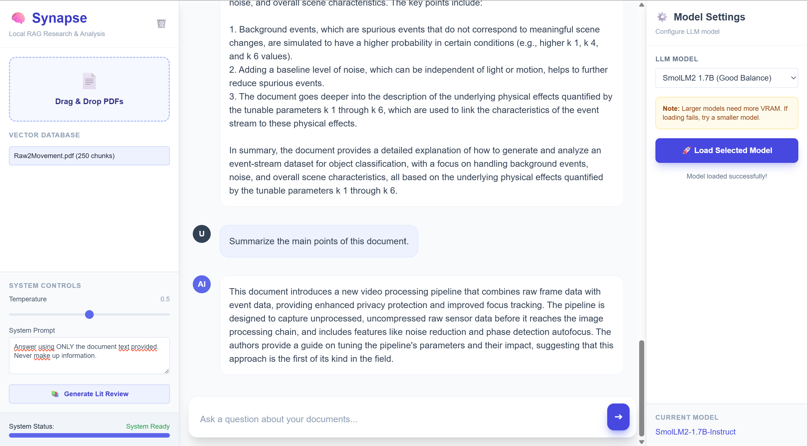

TinyGrad-MNIST Classifier
LIVE DEMO ↗An end-to-end Deep Learning pipeline using the TinyGrad framework, deployed in-browser via WebGPU for real-time inference.

Browser-Native RAG Engine
LIVE DEMO ↗A privacy-first, client-side Retrieval-Augmented Generation system for local semantic search over documents.

WebGPU Ray-Marching Editor
LIVE DEMO ↗An interactive 3D scene editor utilizing SDF (Signed Distance Fields) and real-time lighting.